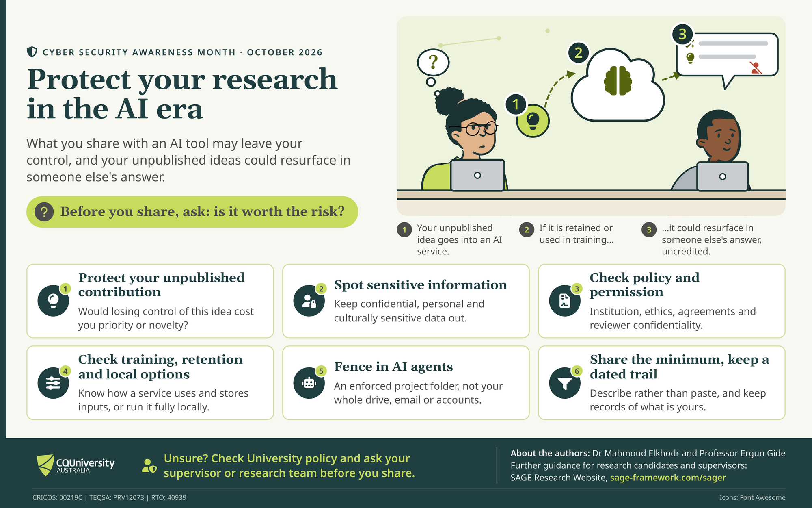

Every file shared with an AI tool is also a sharing decision. A thesis chapter, a manuscript draft or a peer-review report may leave the author's control the moment it is uploaded, and an unpublished idea that is retained or used for training could later resurface in someone else's answer, uncredited.
The poster below sets out six checks to make before sharing. It was prepared for Cyber Security Awareness Month as a short, practical companion to the SAGE-R work on generative and agentic AI in graduate research, and it is written for candidates, supervisors and research teams alike.


Six checks before you share
1. Protect your unpublished contribution. The first question is whether the idea is worth protecting. Would losing control of it cost priority or novelty? If so, it deserves more care than a routine drafting task.
2. Spot sensitive information. Confidential, personal and culturally sensitive data should stay out of general-purpose AI tools. Participant details, unpublished results and community knowledge are common examples.
3. Check policy and permission. Institutional policy, ethics approvals, funding or data agreements and reviewer confidentiality may each limit what can be shared, and some of those limits apply regardless of the tool's settings.
4. Check training, retention and local options. Services differ in how they store inputs and whether they use them for training. Where that is unclear, a tool that runs fully locally may be the safer choice.
5. Fence in AI agents. An agent should be given an enforced project folder, not an entire drive, mailbox or set of accounts. Access that is not granted cannot be misused.
6. Share the minimum and keep a dated trail. Describe the problem rather than pasting the material, and keep dated records of what is yours. A clear record supports a later claim to priority.
Where to go next
These checks build on an earlier discussion of how generative AI changes the terms of the preprint bargain, which is available in Protect Your Research in the Age of Generative AI: Rethinking the Preprint Bargain. The wider framework, including pages for candidates and supervisors, is on the SAGE-R website. When in doubt, university policy and the supervisor or research team are the right first call.
The poster was developed with Professor Ergun Gide and first published in CQUniversity's Researcher Essentials for Cyber Security Awareness Month, October 2026. It is republished here with the text above written for this page.
First published in CQUniversity's Researcher Essentials, October 2026.